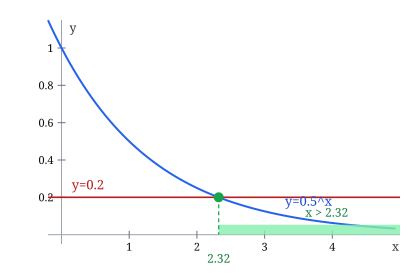

<script src="/assets/redirect.js"></script>
<section class="theory" data-section="P23-2.6">
<h2>2.6 Solving exponential inequalities</h2>
<p class="src">Based on Cambridge International AS &amp; A Level Mathematics: Pure Mathematics 2 &amp; 3 Coursebook (Hugh Neill, Douglas Quadling and Julian Gilbey), Chapter 2 Logarithmic and exponential functions, printed pp.40–41 (Worked examples 2.13–2.14, Exercise 2F). Own wording and new numbers. Natural logarithms are left to the next subsection, as in the book.</p>
<p class="key-words"><strong>Key words:</strong> <em>exponential inequality</em>, <em>logarithm</em></p>
<p>To solve an <strong>exponential inequality</strong> such as \(2^x\gt 10\), take logarithms of both sides. Any valid base may be used, but the inequality symbol needs care:</p>
<ul>
<li>if the base of the logarithm is greater than \(1\), the inequality symbol stays the same, because \(y=\log_a x\) is then an increasing function;</li>
<li>if the base of the logarithm is between \(0\) and \(1\), the inequality symbol must be reversed, because \(y=\log_a x\) is then a decreasing function.</li>
</ul>
<p>Logarithms to base \(10\) therefore leave the symbol unchanged. The symbol must still be reversed if you later divide both sides by a negative number. That happens, for example, when you divide by \(\log 0.6\), which is negative. A common error is forgetting to reverse the inequality when the logarithm is negative.</p>
<div class="worked-example">
<h4>Worked example 1: A base greater than \(1\)</h4>
<p class="src">Book: the opening inequality \(2^x\gt 3\) on p.40; new right-hand side</p>
<p>Solve the inequality \(2^x\gt 10\), giving the critical value in terms of base \(10\) logarithms and also correct to \(3\) significant figures.</p>
<ol class="steps">
<li>Taking logs to base \(10\), \(x\log 2\gt \log 10\). Since \(\log 2\gt 0\), dividing keeps the symbol, and \(x\gt \dfrac{\log 10}{\log 2}\). <span class="mark">M1</span></li>
<li>The critical value is \(3.32\) to \(3\) significant figures, so \(x\gt 3.32\) to \(3\) significant figures. <span class="mark">A1</span></li>
</ol>
<p class="final"><strong>Answer:</strong> \(x\gt \dfrac{\log 10}{\log 2}\), or \(x\gt 3.32\) to \(3\) significant figures</p>
</div>
<div class="worked-example">
<h4>Worked example 2: A base between \(0\) and \(1\)</h4>
<p class="src">Book: Worked example 2.13, p.40; new numbers</p>
<p>Solve the inequality \(0.5^x\lt 0.2\), giving the critical value correct to \(3\) significant figures.</p>
<ol class="steps">
<li>Taking logs to base \(10\), \(x\log 0.5\lt \log 0.2\). Now \(\log 0.5\) is negative, so dividing reverses the inequality: \(x\gt \dfrac{\log 0.2}{\log 0.5}\). <span class="mark">M1</span></li>
<li>The critical value is \(2.32\) to \(3\) significant figures, so \(x\gt 2.32\) to \(3\) significant figures. <span class="mark">A1</span></li>
</ol>
<p class="final"><strong>Answer:</strong> \(x\gt 2.32\) to \(3\) significant figures</p>
</div>
<p></p>
<div class="worked-example">
<h4>Worked example 3: A constant factor</h4>
<p class="src">Book: Worked example 2.14, p.41; new numbers</p>
<p>Solve \(4\times 3^x\gt 20\), giving the critical value in terms of base \(10\) logarithms and also correct to \(3\) significant figures.</p>
<ol class="steps">
<li>Dividing by \(4\) gives \(3^x\gt 5\). Taking logs, \(x\log 3\gt \log 5\), so \(x\gt \dfrac{\log 5}{\log 3}\). <span class="mark">M1</span></li>
<li>The critical value is \(1.46\) to \(3\) significant figures, so \(x\gt 1.46\) to \(3\) significant figures. <span class="mark">A1</span></li>
</ol>
<p class="final"><strong>Answer:</strong> \(x\gt \dfrac{\log 5}{\log 3}\), or \(x\gt 1.46\) to \(3\) significant figures</p>
</div>
<h3>Past paper</h3>
<p>No official past-paper item for solving an exponential inequality could be packaged. A later search of 9709 Paper 2 and Paper 3 in the local corpus (session codes 10 to 24) found two genuine official questions of this type: 9709/22/O/N/23 Question 4(c) and 9709/33/O/N/23 Question 1. Neither has an official mark scheme in the available QP+MS corpus, and no mark scheme has been invented. Earlier papers in the same range are almost all modulus inequalities rather than exponential ones. This is an honest gap.</p>
<h3>Quick check</h3>
<p>In each case the inequality has the form \(x\) greater than \(k\). Give \(k\) correct to \(3\) significant figures.</p>
<div class="quick-check" data-q="QC1">
<p>Solve \(3^x\gt 20\). What is the critical value \(k\)?</p>
<p class="final"><strong>Answer:</strong> \(2.73\)</p>
</div>
<div class="quick-check" data-q="QC2">
<p>Solve \(0.4^x\lt 0.1\). What is the critical value \(k\)?</p>
<p class="final"><strong>Answer:</strong> \(2.51\)</p>
</div>
<div class="quick-check" data-q="QC3">
<p>Solve \(4\times 3^x\gt 20\). What is the critical value \(k\)?</p>
<p class="final"><strong>Answer:</strong> \(1.46\)</p>
</div>
</section>
